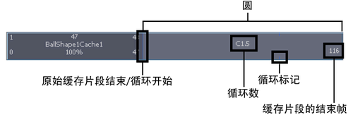
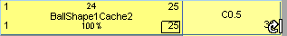
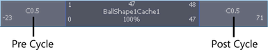
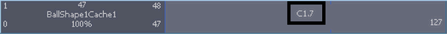

可以循环几何缓存片段以重复缓存片段中包含的变形。可以在缓存片段之前或之后创建循环，它们可以是整个循环，也可以是部分循环。

原始缓存片段的末尾和第一个循环的开头标有一条小竖直线。缓存片段的每个循环序列的结束位置都用一个小圆圈记号标记。
循环由字母 C 表示，并且显示的蓝色比缓存片段的其余部分更浅。
循环几何缓存片段
- 在场景视图中，选择要循环其几何缓存片段的对象。
- 在“Trax 编辑器”(Trax Editor)中，选择要循环的几何缓存片段。
- 执行下列操作之一：
- 按住 Shift 键拖动缓存片段下部角点的聚光区，以便在缓存片段之前（前方循环）或之后（后方循环）创建循环。
在为缓存片段创建循环时将显示循环鼠标指针。

- 在“通道盒”(Channel Box)中，设定前方循环通道值以在缓存片段之前创建循环，或设定后方循环通道值以在缓存片段之后创建循环。
请参见 cacheFile 中的前方循环/后方循环注释。

编辑几何缓存片段的循环数
- 在“Trax 编辑器”(Trax Editor)中，双击缓存片段的循环部分上 C 旁边的数字，键入一个代表在主缓存片段之前（前方循环）或之后（后方循环）循环该片段的次数的数字，然后按 Enter 键。

例如，如果缓存片段的循环部分出现在主缓存片段之后且其循环数为 2，则主缓存片段中的变形将在缓存片段的主要部分之后重复两次。